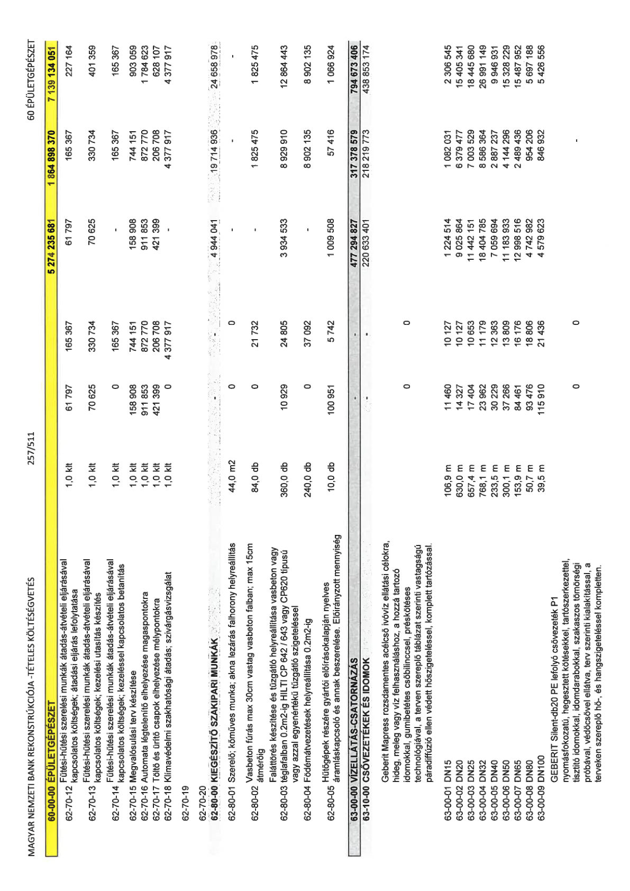

| Tétel | Menny. | Egys. | Anyag e.ár (net HUF) | Díj e.ár (net HUF) | Anyag összesen (net HUF) | Díj összesen (net HUF) | Anyag+Díj összesen (net HUF) |
|---|---|---|---|---|---|---|---|
| 60-00-00 ÉPÜLETGÉPÉSZET | NaN | NaN | 61 797 | 165 367 | 5 274 235 681 | 1 864 898 370 | 7 139 134 051 |
| 62-70-10 Fűtés-hűtési szerelési munkák átadás-átvételi eljárásaival | 1,0 | klt | 61 797 | 165 367 | 61 797 | 165 367 | 227 164 |
| 62-70-12 Fűtési-hűtési szerelési munkák átadás-átvételi eljárásaival kapcsolatos költségek, kezelési utasítás készítés | 1,0 | klt | 70 625 | 330 734 | 70 625 | 330 734 | 401 359 |
| 62-70-13 Fűtési-hűtési szerelési munkák átadás-átvételi eljárásaival kapcsolatos költségek, kezeléssel kapcsolatos betanítás | 1,0 | klt | 0 | 165 367 | 0 | 165 367 | 165 367 |
| 62-70-14 Fűtési-hűtési szerelési munkák átadás-átvételi eljárásaival kapcsolatos költségek, kezeléssel kapcsolatos betanítás | 1,0 | klt | 158 908 | 744 151 | 158 908 | 744 151 | 903 059 |
| 62-70-15 Megvalósulási terv készítése | 1,0 | klt | 911 853 | 872 770 | 911 853 | 872 770 | 1 784 623 |
| 62-70-16 Automata légtelenítő elhelyezése magasponotokra | 1,0 | klt | 421 399 | 206 708 | 421 399 | 206 708 | 628 107 |
| 62-70-18 Klímavédelmi szakhatósági átadás; szivárgásvizsgálat | 1,0 | klt | 0 | 4 377 917 | 0 | 4 377 917 | 4 377 917 |
| 62-70-19 | NaN | NaN | 0 | 0 | 4 944 041 | 19 714 936 | 24 658 978 |
| 62-80-00 KIEGÉSZÍTŐ SZAKIPARI MUNKÁK | NaN | NaN | 0 | 0 | 0 | 0 | 0 |
| 62-80-01 Szerelő; kőműves munka; akna lezárás falhorony helyreállítás | 44,0 | m2 | 0 | 0 | 0 | 0 | 0 |
| 62-80-02 Vasbeton fúrás max 30cm vastag vasbeton falban; max 15cm átmérőig | 84,0 | db | 0 | 21 732 | 0 | 1 825 475 | 1 825 475 |
| 62-80-03 Faláttörés készítése és tűzgátló helyreállítása vasbeton vagy tűzgátló szigeteléssel | 360,0 | db | 10 929 | 24 805 | 3 934 533 | 8 929 910 | 12 864 443 |
| 62-80-04 Födémátvezetések helyreállítása 0.2m2-ig | 240,0 | db | 0 | 37 092 | 0 | 8 902 135 | 8 902 135 |
| 62-80-05 Hűtőgépek részére gyártói előírások alapján nyelves áramláskapcsoló és annak beszerelése. Előirányzott mennyiség | 10,0 | db | 100 951 | 5 742 | 1 009 508 | 57 416 | 1 066 924 |
| 62-80-00 ÖSSZESEN | NaN | NaN | 0 | 0 | 477 294 827 | 317 378 579 | 794 673 406 |
| 63-10-00 CSŐVEZETÉKEK ÉS IDOMOK | NaN | NaN | 0 | 0 | 220 633 401 | 218 219 773 | 438 853 174 |
| 63-00-01 DN15 | 106,9 | m | 11 460 | 10 127 | 1 224 514 | 1 082 031 | 2 306 545 |
| 63-00-02 DN20 | 630,0 | m | 14 327 | 10 127 | 9 025 864 | 6 379 477 | 15 405 341 |
| 63-00-03 DN25 | 657,4 | m | 17 404 | 10 653 | 11 442 151 | 7 003 529 | 18 445 680 |
| 63-00-04 DN32 | 768,1 | m | 23 962 | 11 179 | 18 404 785 | 8 586 364 | 26 991 149 |
| 63-00-05 DN40 | 233,5 | m | 30 229 | 12 363 | 7 059 694 | 2 887 237 | 9 946 931 |
| 63-00-06 DN50 | 300,1 | m | 37 266 | 13 809 | 11 183 933 | 4 144 296 | 15 328 229 |
| 63-00-07 DN65 | 153,9 | m | 84 461 | 16 176 | 12 998 516 | 2 489 436 | 15 487 952 |
| 63-00-08 DN80 | 50,7 | m | 93 476 | 18 806 | 4 742 982 | 954 206 | 5 697 188 |
| 63-00-09 DN100 | 39,5 | m | 115 910 | 21 436 | 4 579 623 | 846 932 | 5 426 556 |
